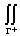
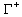
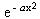
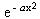

Analiza 2
II kolokvijum
jun '95, smer R
1. Date su povrsi G1: z = 2 - 3(x² + y²), G2: z² = x² + y², G3: z² = 3(x² + y²) i ravni p1: y = x, p2: y = p / Ö3. Izracunati zapreminu tela ogranicenog delovima datih povrsi i datih ravni u prvom oktantu.
2. Izracunati integral I = 
 ,
gde a Î R i G: {(x, y) : x²
+ y² £ 1}.
,
gde a Î R i G: {(x, y) : x²
+ y² £ 1}.
3. Izracunati krivolinijski integral I =  (y
- z)dx + (z - x)dy + (x - y)dz gde je C presecna kriva povrsi
(y
- z)dx + (z - x)dy + (x - y)dz gde je C presecna kriva povrsi
z = 4 - x² - 2y² i ravni x + 2y + z = 1, proizvoljno orjentisana.
4. Naci I = x² dydz + y² dzdx + z² dxdy, gde je spoljni deo povrsi x² + y² + 2rz = r² u prvom oktantu.
5. Naci integral I(a) =  cosbx
dx za a > 0.
cosbx
dx za a > 0.